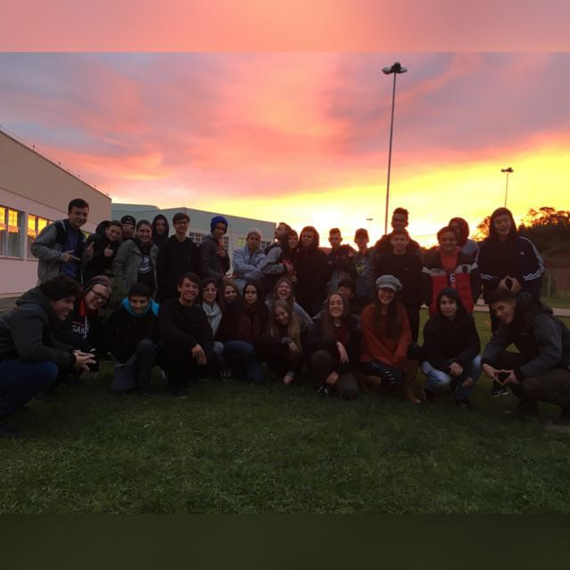

1 de fevereiro de 2019
O prelúdio

A minha paixão por tecnologia começou no curso técnico de informática integrado ao ensino médio do Campus IFSul Sapiranga. Eu fiz grandes amigos com as pessoas do Campus e com o pessoal da minha turma, uma pena que a maioria deles desistiram durante a jornada.
19 de maio de 2023
O fim, o começo
Hoje eu conclui o curso técnico em informática integrado ao ensino médio, é difícil acreditar que 4 anos passaram tão rápido e que eu não vou mais estar estudando no campus IFSul de Sapiranga. Mas toda a história precisa ter um fim, permitindo assim que uma nova se inicie e por isso eu decidi que vou continuar na área da tecnologia e TI. O curioso é que tive a coincidência de terminar esse projeto de cápsula do tempo nesse mesmo dia.
Musica: Rumo a vitória, artista: Yun Li (Yung Lixo, Gemaplys).